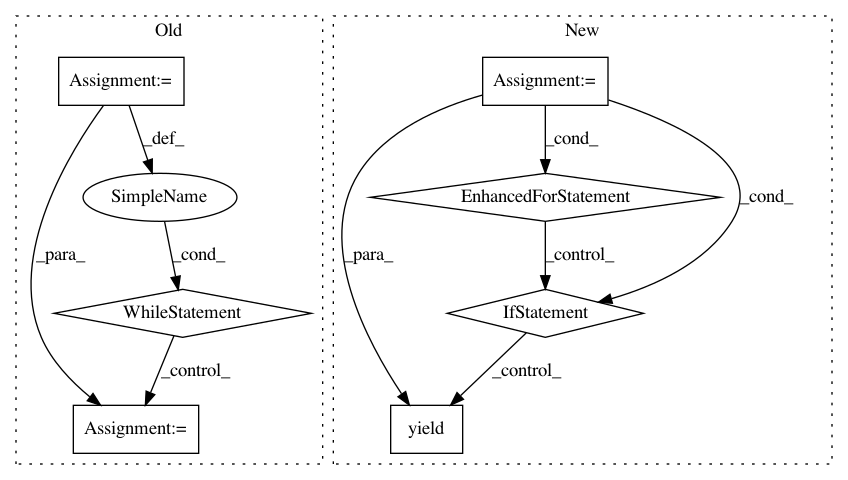

c6607119c25d0178245243ef3fdd3d176dd0d8f2,trackpy/linking/utils.py,,coords_from_df,#Any#Any#Any#,36
Before Change
cur_frame, frame = next(grouped)
cur_frame = int(cur_frame)
yield cur_frame, frame[pos_columns].values
cur_frame += 1
for frame_no, frame in grouped:
frame_no = int(frame_no)
while cur_frame < frame_no:
yield cur_frame, np.empty((0, ndim))
cur_frame += 1
yield cur_frame, frame[pos_columns].values
cur_frame += 1
After Change
pos_by_frame = np.split(pos, np.cumsum(time_counts)[:-1])
idx = 0
for time in range(unique_times[0], unique_times[-1] + 1):
if time == unique_times[idx]:
yield time, pos_by_frame[idx]
idx += 1
else:
yield time, np.empty((0, ndim))
def coords_from_df_iter(df_iter, pos_columns, t_column):
A generator that returns ndarrays of coords from a generator of
DataFrames. Also returns the first value of the t_column.
ndim = len(pos_columns)
In pattern: SUPERPATTERN
Frequency: 3
Non-data size: 7
Instances
Project Name: soft-matter/trackpy
Commit Name: c6607119c25d0178245243ef3fdd3d176dd0d8f2
Time: 2020-01-22
Author: anntzer.lee@gmail.com
File Name: trackpy/linking/utils.py
Class Name:
Method Name: coords_from_df
Project Name: okfn-brasil/serenata-de-amor
Commit Name: e4d5b98f9d2ef79279300d1074cbaacde8e816dc
Time: 2016-11-20
Author: cuducos@gmail.com
File Name: src/fetch_sex_places.py
Class Name:
Method Name: sex_places_neraby
Project Name: dit/dit
Commit Name: 37b54afef51c7430f8fa00db2f07e3532a7408da
Time: 2013-10-01
Author: chebee7i@gmail.com
File Name: dit/distribution.py
Class Name: BaseDistribution
Method Name: zipped
Project Name: soft-matter/trackpy
Commit Name: c6607119c25d0178245243ef3fdd3d176dd0d8f2
Time: 2020-01-22
Author: anntzer.lee@gmail.com
File Name: trackpy/linking/utils.py
Class Name:
Method Name: coords_from_df